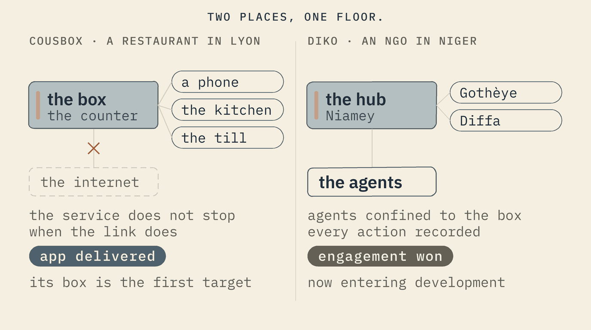
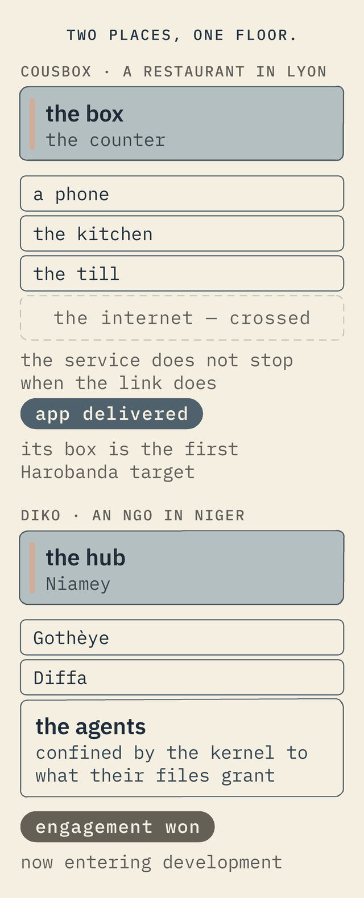

In the field
Two real engagements, and an honest account of what is real today.
Two engagements that shaped the design — a restaurant in Lyon and an NGO in Niger — and a plain list of what works now and what is still ahead.
Reference cases · shaped by real work
Two proofs: a critical application, and a critical agent.
The approach was not designed in the abstract. It comes from real solutions in demanding places, where the connection is not guaranteed and the data is not negotiable. Two of them stand for the rest — one an application already delivered, one an engagement just won.


Cousbox
Amor's couscous restaurant runs its whole service on one box behind the counter — ordering on the customer's phone, the kitchen display, the till. What the floor adds is what an ordinary OS cannot:
Ordinary OS: the box's address moves after a power cut, a bad update can brick it overnight, it needs a login and patches to keep safe, and the takings sit wherever the software decides.
Harobanda: a fixed address that survives the breaker, updates that roll back by hardware, no shell or packages to secure — and “my numbers stay with me” enforced by a declared boundary, not a setting.
Diko
A national NGO in Niamey, with bases at Gothèye and Diffa — a sovereign hub of eight modules, offline, owned outright by DIKO. On top of it, Diko AI turns its maturity assessment into advisor agents that improve the organisation continuously. The floor is what makes that safe:
Ordinary OS: a Linux server per base to patch from afar, each one a snowflake; agents with a network they could leak through; data residency you can only promise on paper.
Harobanda: each box rebuilt from one file; no route off the base's own network, declared in that file and shown at every boot; the agents confined by the kernel to what their files grant; every boot signed by the box itself — and reversibility that is the artifact itself, not a clause.
One a critical application, one a critical agent — and both the same floor, the same stack, the same idea.